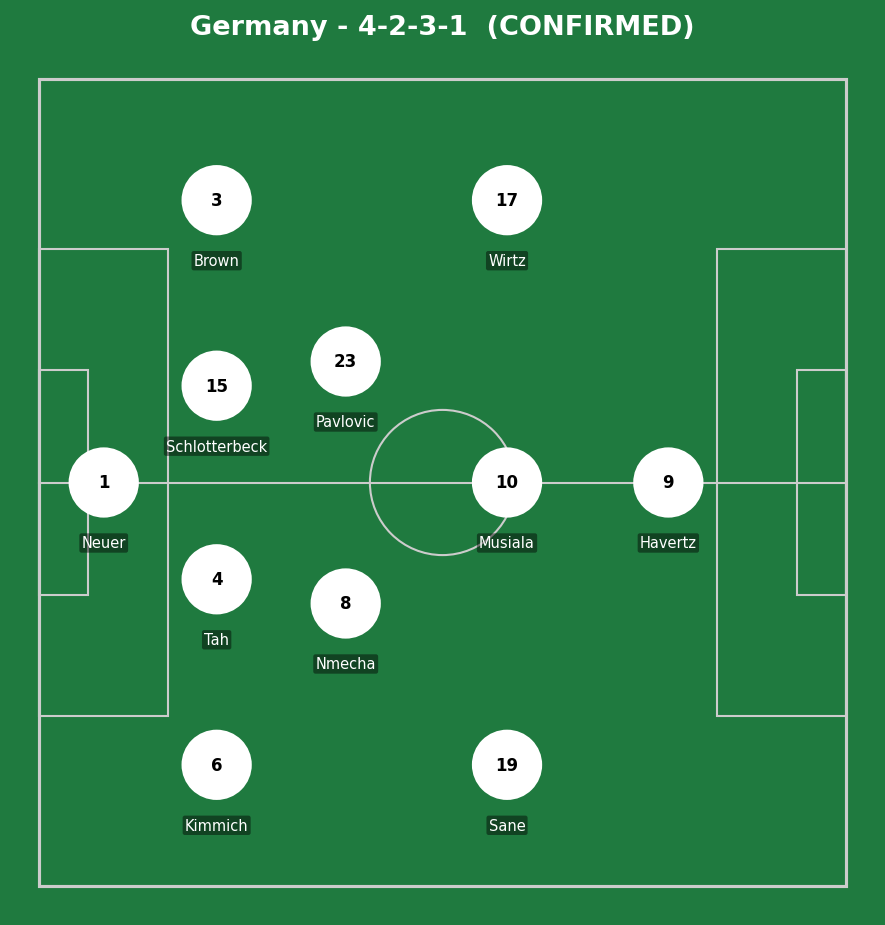
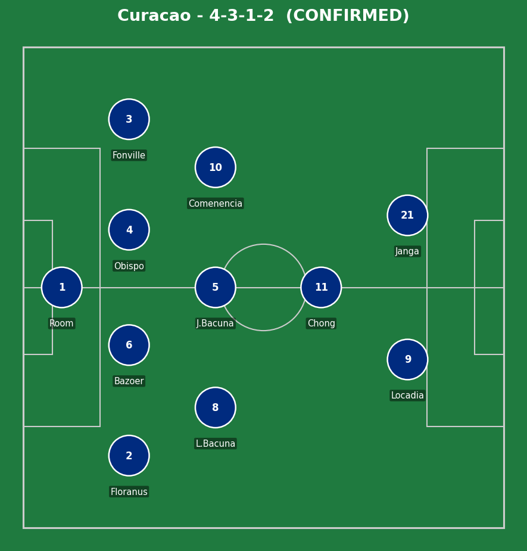
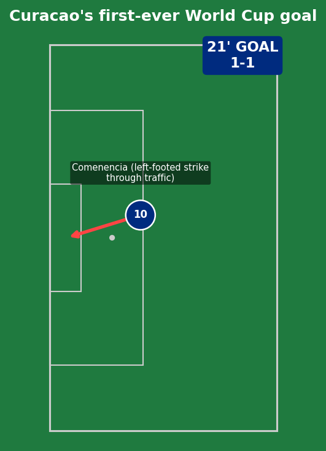
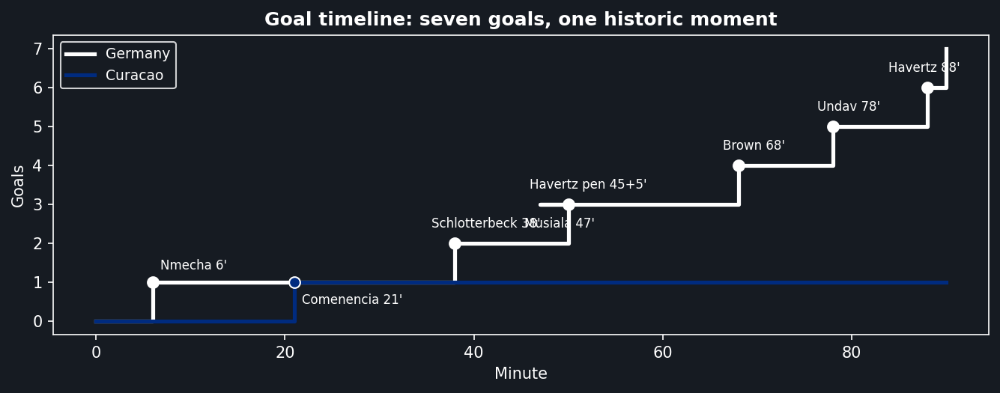
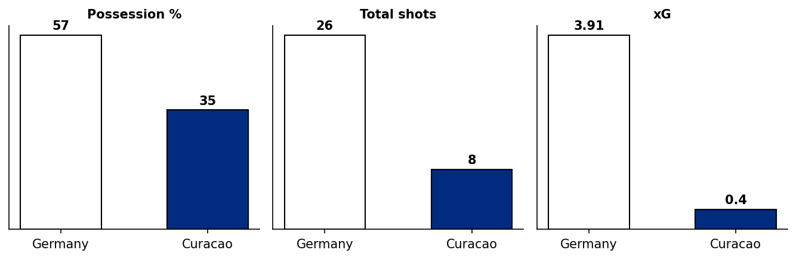
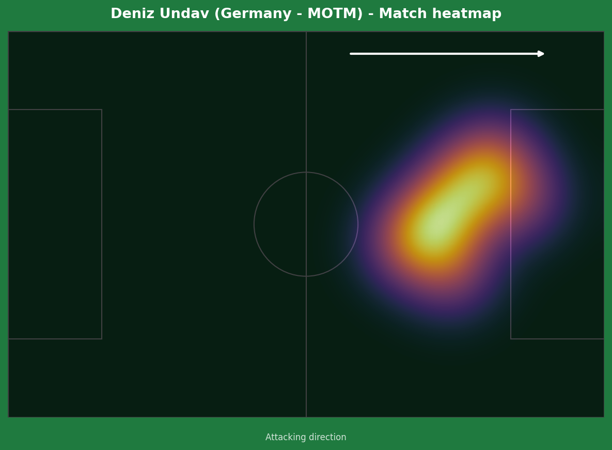
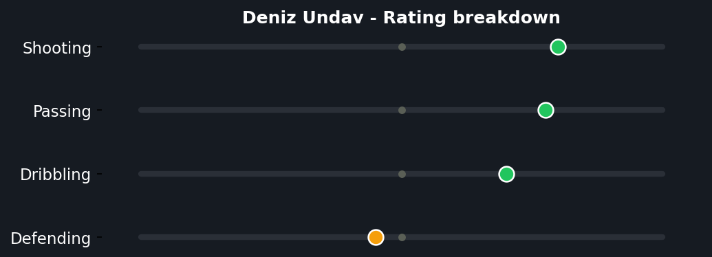
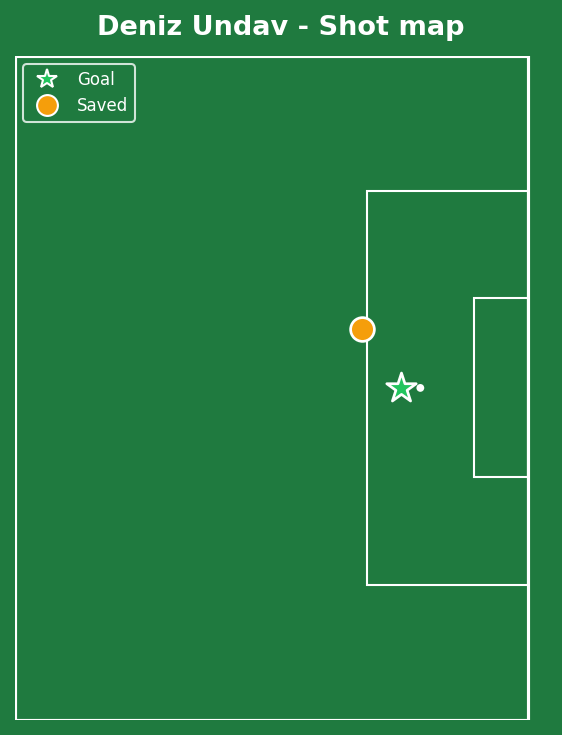

Germany made an emphatic start to their World Cup, with four different scorers (plus Havertz's brace) running riot against tournament debutants Curacao. But the headline moment belonged to the underdogs - Livano Comenencia's 21st-minute equalizer was Curacao's first-ever World Cup goal, sending the smallest nation ever to qualify into delirium even as the eventual scoreline turned heavily against them.


Germany (4-2-3-1): Neuer; Kimmich, Tah, Schlotterbeck, Brown; Nmecha, Pavlovic; Sane, Musiala, Wirtz; Havertz. Curacao (4-3-1-2): Room; Floranus, Bazoer, Obispo, Fonville; Comenencia, L. Bacuna, J. Bacuna; Chong; Locadia, Janga.
Germany's front four (Sane, Musiala, Wirtz behind Havertz) rotated positions fluidly all match, making Curacao's banked shape difficult to track consistently - the kind of interchange that's hard to defend with a back four unused to facing players of this individual quality. Once Germany found the right half-spaces, the goals came in clusters either side of half-time.
Curacao's response was honest and at times genuinely impressive for a side with this gap in resources - Comenencia's goal came from real composure under pressure, not a fortunate bounce. The problem was sustaining defensive concentration across 90 minutes against a squad with this much individual talent in every position; once the gap opened past 3-1, the floodgates were always a risk.
The key tactical moment wasn't really tactical at all - it was psychological. Curacao's equalizer at 1-1 genuinely threatened to make this a contest, and Germany's response (3 goals in the next 30 minutes either side of half-time) was the German football mentality at its most clinical: punish a let-off immediately rather than let it linger.

This deserves its own section, not just a line in a timeline. Comenencia received the ball with traffic in front of him and didn't rush it - a composed left-footed strike threaded through bodies into the corner, genuinely difficult technique under real pressure, not a deflection or a mistake from Germany. For a nation with a population smaller than most World Cup stadiums, this was a moment of real individual quality on the biggest stage that exists in football, and it deserves to be remembered as such regardless of the eventual scoreline.

Nmecha (6') - combination with Wirtz finished first-time into the far corner; quick, clean German interplay rather than a Curacao error. Schlotterbeck (38') - a header from Brown's corner, pure set-piece quality and physicality, no defensive mistake to point to beyond simply being out-jumped. Havertz (45+5', penalty) - Bazoer's trip on Nmecha was a clear, correct penalty award, not a soft call. Musiala (47') - Kimmich's pass split Curacao's defense clean in two; elite passing quality, not a structural gift. Brown (68') - a composed volleyed finish on his World Cup debut, created by Undav's assist. Undav (78') - close-range finish off a Kimmich assist, simple but well-timed movement to arrive unmarked. Havertz (88') - a clipped finish to complete his brace, Curacao legs and concentration both gone by this point.

A 3.91 to 0.4 xG gap reflects total German territorial and chance-creation dominance - the scoreline, if anything, slightly undersells how comfortable this was for long stretches.



A goal-and-two-assists performance off the bench is about as efficient an impact substitute appearance as exists, and the 8.9 rating reflects genuine direct involvement in three of Germany's seven goals rather than simply padding numbers in a blowout. The rating breakdown shows a balanced shooting/passing profile rather than a pure poacher's one - he was creating as much as he was finishing, which is exactly the swiss-army-knife profile Nagelsmann wants from his attacking substitutes.
Illustrative reconstruction based on known event locations, not raw GPS tracking data.
Undav - 8.9 ⭐ MOTM (goal, 2 assists)
Havertz - 7.5 (brace)
Musiala - 7.5 (clinical finish)
Neuer - 6.5 (one save, 40 yrs old)
Comenencia - 7.5 (historic goal)
Room - 5.0 (seven conceded)
Bazoer - 5.0 (penalty conceded)
Floranus - 5.5 (battled throughout)
Next: Germany face Ivory Coast in Toronto. Curacao face Ecuador in Kansas City, looking for their first World Cup point.